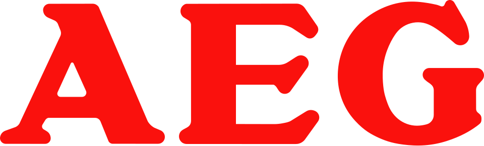

아에게 AEG
AEG(아에게)는 1883년 독일 베를린에서 Emil Rathenau가 설립한 전기설비 제조사이며, 현재는 스웨덴 기업 일렉트로룩스가 소유한 브랜드이다.
최종 업데이트

아에게는 어떤 브랜드인가
AEG(아에게)는 1883년 독일 베를린에서 설립된 전기설비 제조사이다. 전구, 모터, 발전기 등 전기 장비 생산으로 사업을 시작해 이후 교류 전력 송전 시스템 사업으로 확장했다.
20세기 전반에는 자동차와 항공기 시장에도 진출했으며 독일 철도용 전기 장비도 오랫동안 공급했다. 제2차 세계대전 중에는 나치 정권과 협력하고 강제노동을 이용했다는 역사를 가지고 있다.
전후 여러 차례 사명과 소유 구조가 바뀌었고 1996년 회사는 공식적으로 해체되었다. 이후 AEG 브랜드는 2005년부터 스웨덴 기업 일렉트로룩스가 소유하며 여러 브랜드 파트너에 라이선스를 제공하고 있다.
아에게는 어떻게 시작되고 성장했나
1882년 Emil Rathenau가 독일에서 Thomas Edison의 전구 특허 사용권을 취득했다. 1883년 은행과 개인 투자자들의 자금 지원을 받아 베를린에서 Deutsche Edison-Gesellschaft für angewandte Elektricität라는 이름으로 설립되었다.
1888년 사명을 Allgemeine Elektricitäts-Gesellschaft로 변경했다. 초기에는 전구, 모터, 발전기 등 전기 장비를 생산하다가 점차 교류 전력 송전 시스템 사업으로 확장했다.
1907년에는 Peter Behrens를 예술 고문으로 영입해 제품과 광고에 공통된 디자인 요소를 적용한 기업 아이덴티티를 만들었다.
아에게의 브랜드 아이덴티티는 무엇인가
AEG는 독일 초기 전기산업을 이끈 제조사에서 출발해 현재는 일렉트로룩스가 소유·라이선스하는 브랜드로 존속하고 있다는 점에서 구분된다.
아에게의 대표 제품과 서비스는 무엇인가
AEG는 초기에 전구, 모터, 발전기 등 전기 장비를 생산했으며 이후 교류 전력 송전 시스템으로 사업을 확장했다. 소규모 발전소를 이용해 카페, 레스토랑, 극장에 전기 조명을 공급했으며 19세기 말까지 248개의 발전소를 건설해 조명, 노면전차, 가정용 기기에 210,000마력의 전력을 공급했다.
20세기 전반에는 자동차와 항공기 시장에도 진출했고 독일 철도용 전기 장비도 생산했다. 1994년 일렉트로룩스가 가정용 기기 자회사 AEG Hausgeräte를 인수했고, 2005년부터는 AEG 브랜드 자체를 소유해 여러 브랜드 파트너에 라이선스를 제공하고 있다.
아에게는 지금 어떤 상태인가
1985년 Daimler-Benz가 AEG를 인수했으며 이후 회사는 1990년대에 여러 사업부로 분할되어 각각 매각되었다. 1996년 AEG는 공식적으로 해체되었다.
가정용 기기 사업은 1994년 일렉트로룩스에 인수되었고, 2005년부터는 스웨덴 기업 일렉트로룩스가 AEG 브랜드 소유권을 보유하며 여러 브랜드 파트너에 라이선스를 제공하고 있다.
아에게 로고는 어떻게 변해왔나
자주 묻는 질문
아에게는 어느 나라 브랜드인가요?
아에게는 독일의 기술·전자 브랜드입니다.
아에게는 언제 설립되었나요?
아에게는 1883년 설립되었습니다.
아에게의 브랜드 아이덴티티는 무엇인가요?
AEG는 독일 초기 전기산업을 이끈 제조사에서 출발해 현재는 일렉트로룩스가 소유·라이선스하는 브랜드로 존속하고 있다는 점에서 구분된다.
아에게의 대표 제품은 무엇인가요?
AEG는 초기에 전구, 모터, 발전기 등 전기 장비를 생산했으며 이후 교류 전력 송전 시스템으로 사업을 확장했다.
아에게는 어느 기업이 소유하고 있나요?
1985년 Daimler-Benz가 AEG를 인수했으며 이후 회사는 1990년대에 여러 사업부로 분할되어 각각 매각되었다.
아에게의 창업자는 누구인가요?
아에게의 창업자는 Emil Rathenau입니다(위키데이터 기준).
아에게의 본사는 어디에 있나요?
아에게의 본사는 프랑크푸르트암마인에 있습니다(위키데이터 기준).
출처와 검증
아에게 관련 참고: 위키데이터 Q158276 · 한국어 위키백과 · 영어 위키백과. 브랜드명은 한글과 원어를 함께 표기하되 데이터에 없는 표기는 만들지 않습니다. 기원 국가·설립연도는 검수된 정의문에서 확인된 값을 우선하고, 없을 때만 공식 웹사이트 URL이 일치하는 위키데이터 개체의 값을 씁니다. 위키데이터 값은 2026-09-26 기준입니다.